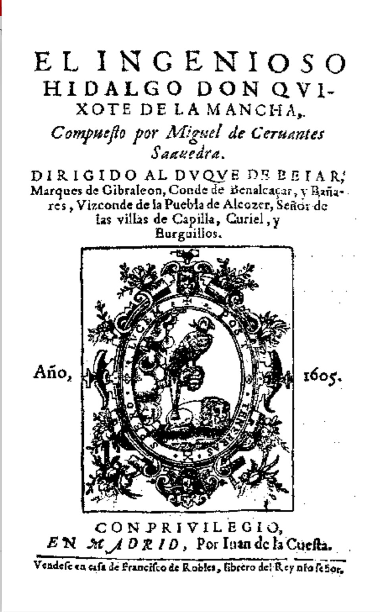

Anda en las librerías un hidalgo que enloqueció leyendo: don Quijote de la Mancha
Desde hace días se vende en Madrid «El ingenioso hidalgo don Quijote de la Mancha», compuesto por Miguel de Cervantes Saavedra e impreso en casa de Juan de la Cuesta. La corte entera ríe con él, y este diario sospecha que el libro guarda más de lo que muestra.

Desde hace días se vende en la corte un libro nuevo que trae alborotados los mentideros y las librerías: «El ingenioso hidalgo don Quijote de la Mancha», impreso en la calle de Atocha, en casa de Juan de la Cuesta, a costa del librero Francisco de Robles. El pliego de la tasa se firmó a fines del año pasado, y ya hay quien lo pide prestado, quien lo lee en voz alta en los corrillos y quien jura que no se ha impreso en muchos años cosa de mayor donaire. El tomo es grueso, el precio no es corto y la risa, dicen los que lo han acabado, está asegurada.
Su autor es Miguel de Cervantes Saavedra, hombre de cerca de sesenta años y de vida más trabajada que premiada: soldado en la batalla naval de Lepanto, donde quedó estropeado de la mano izquierda, cautivo cinco años en Argel, luego comisario de abastos y recaudador por Andalucía, oficios que le dieron más pleitos que hacienda. De sus letras se conocía «La Galatea», de hace veinte años, y comedias de desigual fortuna. Ahora, ya entrado en canas, da a la estampa esta historia de un hidalgo de un lugar de la Mancha que de tanto leer libros de caballerías vino a perder el juicio.
El desatino del hidalgo es el asunto del libro y también su blanco: esos libros de caballerías que desde hace un siglo ceban las prensas y desvelan a los lectores, con sus Amadises y Palmerines, sus gigantes descabezados y sus doncellas menesterosas. El hidalgo de Cervantes se cree caballero andante, se hace armar en una venta que toma por castillo, arremete contra molinos de viento persuadido de que son gigantes y llama Dulcinea a una labradora que no lo sabe. Cada aventura acaba en palos y cada paliza en un discurso; la burla del género está hecha con las armas del propio género, y ahí muestra su ingenio.
El acierto mayor, en lo que este diario alcanza, es la compañía que el loco lleva: un labrador redondo y socarrón llamado Sancho Panza, que le sirve de escudero a cambio de la promesa de una ínsula, y que ensarta refranes como cuentas de rosario. Entre el seso del amo, que desvaría hacia arriba, y el del criado, que discurre hacia el pan, se arma una conversación que no se parece a nada de lo impreso hasta hoy. Los lectores repiten ya los pasajes de los molinos y de los batanes, y en los patios se empieza a llamar quijote al flaco soñador y sancho al que solo piensa en comer.
Fácil es despachar el libro como burla para desocupados, y así lo hará más de un grave varón. Pero quien lo lea sin prisa hallará debajo de la risa un no sé qué de melancolía: un hombre bueno que quiere ser mejor de lo que su siglo consiente, y un mundo que responde a sus sueños con pedradas. Se ríe uno del hidalgo y a la vuelta de la página se sorprende queriéndole. Si esto es solo entretenimiento, es el más extraño que han dado las prensas de España; este diario sospecha que hay aquí algo más hondo que una burla, y deja al tiempo la palabra.